Code
library(tidyverse)
library(tidycensus)
library(sf)
library(caret)
Sys.getenv("CENSUS_API_KEY") != "" # should print TRUE[1] TRUEMUSA 5080 · Integrates Weeks 1–5
I’ve been thinking about how uneven car access is across Philadelphia. In some parts of the city, almost everyone owns a car; in others, most households don’t have one at all. If I am a transit or planning agency deciding where to add bus service, put in bike lanes, or expand car-share, I would want to know which tracts are most dependent on alternatives to driving. So the question I set out to answer is: what kinds of places in Philadelphia have the highest share of households without a vehicle, and what can we predict about that share?
To measure it, I use ACS table B08203, which counts households by how many vehicles they have:
B08203_001: total householdsB08203_002: households with no vehicle availableFrom those two counts I build my outcome, the percent of households with no vehicle in each tract. I picked this over median rent or home value because it’s a clean rate that I can give a proper margin of error, and it’s a number that genuinely matters for policy decisions on the ground.
library(tidyverse)
library(tidycensus)
library(sf)
library(caret)
Sys.getenv("CENSUS_API_KEY") != "" # should print TRUE[1] TRUEctrl <- trainControl(method = "cv", number = 10)
cv_rmse <- function(formula, data) {
df <- if (inherits(data, "sf")) st_drop_geometry(data) else data
vars <- all.vars(formula)
bad <- vars[sapply(vars, function(v) any(is.na(df[[v]])))]
if (length(bad) > 0) {
stop("These variables have NAs: ", paste(bad, collapse = ", "),
". Fill them or choose another variable (Rule 1: don't drop rows).")
}
set.seed(5080)
fit <- train(formula, data = df, method = "lm", trControl = ctrl)
fit$results$RMSE
}model_log <- tibble(
model = character(),
added = character(),
cv_rmse = numeric(),
notes = character()
)I pull the outcome (no-vehicle share) plus four ACS baseline predictors that plausibly relate to car ownership: median income, poverty rate, renter share, and mean travel time to work. None of them is built from my outcome.
philly_tracts <- get_acs(
geography = "tract",
state = "PA",
county = "Philadelphia",
variables = c(
total_pop = "B01003_001",
hh_total = "B08203_001",
hh_noveh = "B08203_002",
med_inc = "B19013_001",
pov_num = "B17001_002",
pov_den = "B17001_001",
rent_num = "B25003_003",
rent_den = "B25003_001",
commute_num = "B08013_001",
commute_den = "B08303_001"
),
year = 2023,
output = "wide",
geometry = TRUE
) %>%
st_transform(2272)
|
| | 0%
|
|= | 1%
|
|= | 2%
|
|== | 3%
|
|=== | 4%
|
|==== | 5%
|
|==== | 6%
|
|===== | 7%
|
|===== | 8%
|
|====== | 8%
|
|====== | 9%
|
|======= | 10%
|
|======== | 11%
|
|======== | 12%
|
|========= | 13%
|
|========== | 14%
|
|========== | 15%
|
|=========== | 16%
|
|============ | 17%
|
|============ | 18%
|
|============= | 19%
|
|============== | 20%
|
|=============== | 21%
|
|=============== | 22%
|
|================ | 23%
|
|================= | 24%
|
|================== | 25%
|
|================== | 26%
|
|=================== | 27%
|
|==================== | 28%
|
|==================== | 29%
|
|===================== | 30%
|
|====================== | 31%
|
|======================= | 32%
|
|======================= | 33%
|
|======================== | 34%
|
|========================= | 35%
|
|========================= | 36%
|
|========================== | 37%
|
|=========================== | 38%
|
|=========================== | 39%
|
|============================ | 40%
|
|============================= | 41%
|
|============================== | 42%
|
|============================== | 43%
|
|=============================== | 44%
|
|================================ | 45%
|
|================================ | 46%
|
|================================= | 47%
|
|================================== | 48%
|
|================================== | 49%
|
|=================================== | 50%
|
|==================================== | 51%
|
|===================================== | 52%
|
|===================================== | 53%
|
|====================================== | 54%
|
|======================================= | 55%
|
|======================================= | 56%
|
|======================================== | 57%
|
|========================================= | 58%
|
|========================================= | 59%
|
|========================================== | 60%
|
|=========================================== | 61%
|
|============================================ | 62%
|
|============================================ | 63%
|
|============================================= | 64%
|
|============================================== | 65%
|
|============================================== | 66%
|
|=============================================== | 67%
|
|================================================ | 68%
|
|================================================ | 69%
|
|================================================= | 70%
|
|================================================== | 71%
|
|================================================== | 72%
|
|=================================================== | 73%
|
|==================================================== | 74%
|
|==================================================== | 75%
|
|===================================================== | 76%
|
|====================================================== | 77%
|
|======================================================= | 78%
|
|======================================================= | 79%
|
|======================================================== | 80%
|
|========================================================= | 81%
|
|========================================================== | 82%
|
|========================================================== | 83%
|
|=========================================================== | 84%
|
|============================================================ | 85%
|
|============================================================ | 86%
|
|============================================================= | 87%
|
|============================================================== | 88%
|
|============================================================== | 89%
|
|=============================================================== | 90%
|
|================================================================ | 91%
|
|================================================================= | 92%
|
|================================================================= | 93%
|
|================================================================== | 94%
|
|=================================================================== | 95%
|
|=================================================================== | 96%
|
|==================================================================== | 97%
|
|===================================================================== | 98%
|
|===================================================================== | 99%
|
|======================================================================| 100%philly_tracts <- philly_tracts %>%
mutate(
# Outcome: % of households with no vehicle
y = hh_novehE / hh_totalE * 100,
# Reliability of the rate (a proportion -> use moe_prop)
y_moe = moe_prop(hh_novehE, hh_totalE, hh_novehM, hh_totalM),
y_cv = (y_moe / 1.645) / y * 100,
# Baseline predictors
poverty_rate = pov_numE / pov_denE * 100,
rent_pct = rent_numE / rent_denE * 100,
commute_min = commute_numE / commute_denE
)sum(is.na(philly_tracts$y))[1] 20summary(philly_tracts$y_cv) Min. 1st Qu. Median Mean 3rd Qu. Max. NAs
0.03572 0.17204 0.23410 Inf 0.31959 Inf 20 philly_tracts %>%
mutate(reliability = case_when(
y_cv < 12 ~ "High",
y_cv <= 40 ~ "Moderate",
TRUE ~ "Low"
)) %>%
st_drop_geometry() %>%
count(reliability) reliability n
1 High 387
2 Low 21ggplot(philly_tracts, aes(x = y)) +
geom_histogram(bins = 30) +
theme_minimal()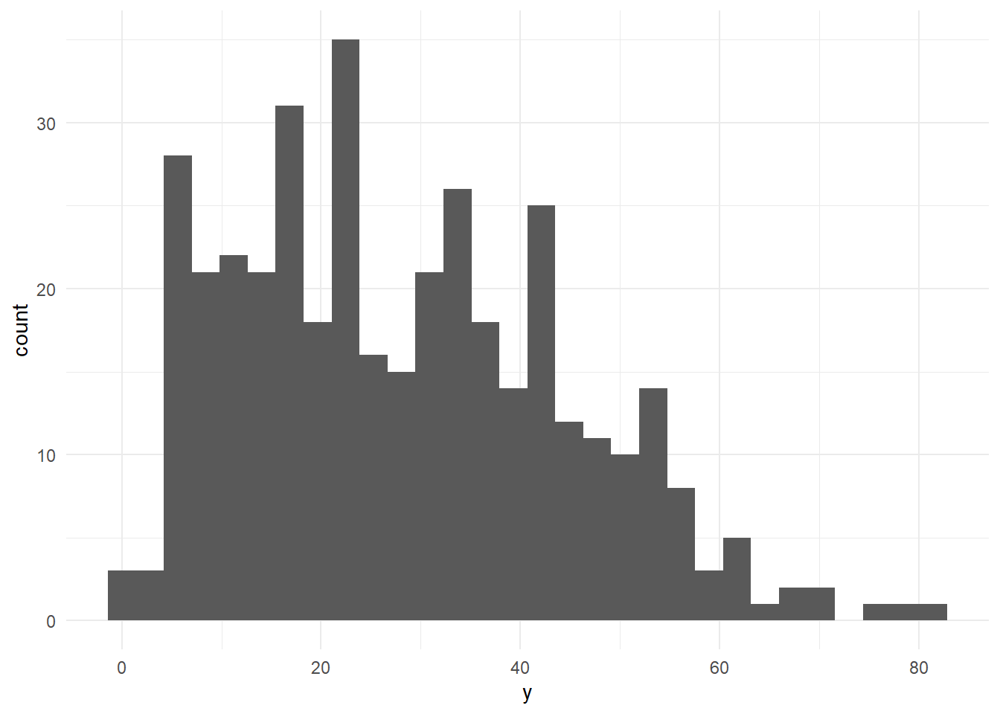
Answer : I’m predicting the share of households without a vehicle in each Philadelphia tract. A transit agency would care about this number because it shows exactly where people depend on something other than a car — that’s where bus routes, bike lanes, and car-share belong. And the data is very usable: 387 of 408 tracts fall in the High bucket and none in Moderate, because the no-vehicle rate sits on large household counts and barely wobbles. The 21 Low tracts are almost all the ones where the outcome itself was missing (20 NAs) plus a couple of tiny-count places — well under a third, so I’m comfortable modeling this outcome.
tracts <- philly_tracts %>%
filter(total_popE > 0,
!is.na(y),
!is.na(med_incE),
!is.na(poverty_rate),
!is.na(rent_pct),
!is.na(commute_min)
)
nrow(philly_tracts)[1] 408nrow(tracts)[1] 380Answer: I dropped 28 tracts (from 408 down to 380). Twenty of them are the ones where the ACS returned no outcome at all — almost all places with nobody actually living there, like industrial zones, big parks, and the airport area. The other eight went out because median income (or another predictor) was missing, so I couldn’t include them without breaking Rule 1’s “same rows everywhere” rule.
ggplot(tracts, aes(x = med_incE, y = y)) + geom_point(alpha = 0.5) +
geom_smooth(method = "lm", se = FALSE) + theme_minimal()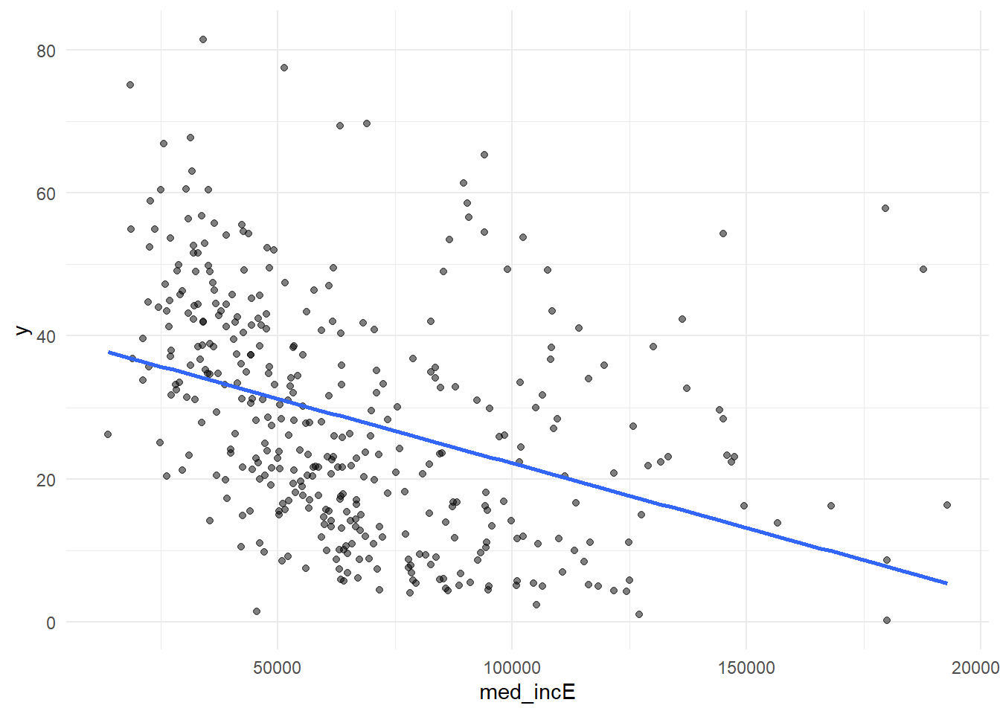
ggplot(tracts, aes(x = poverty_rate, y = y)) + geom_point(alpha = 0.5) +
geom_smooth(method = "lm", se = FALSE) + theme_minimal()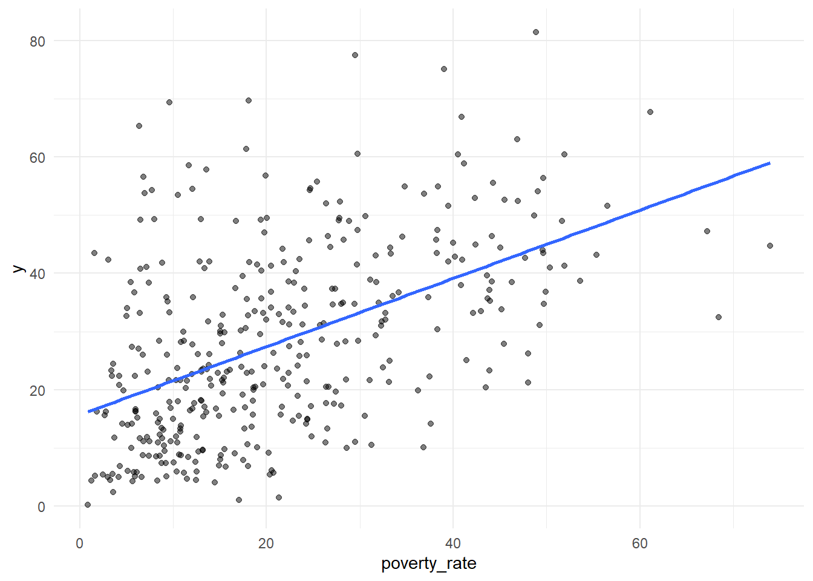
ggplot(tracts, aes(x = rent_pct, y = y)) + geom_point(alpha = 0.5) +
geom_smooth(method = "lm", se = FALSE) + theme_minimal()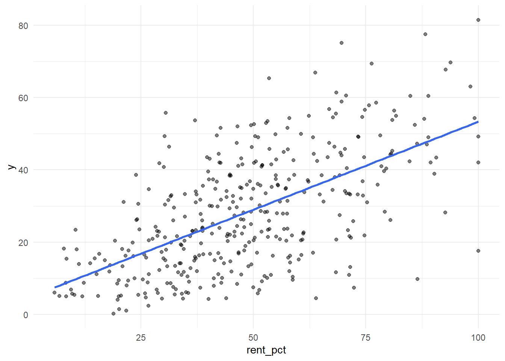
ggplot(tracts, aes(x = commute_min, y = y)) + geom_point(alpha = 0.5) +
geom_smooth(method = "lm", se = FALSE) + theme_minimal()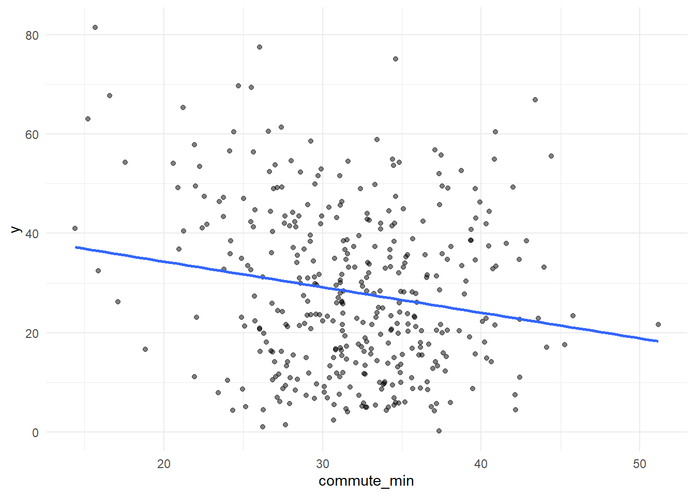
f1 <- y ~ med_incE + poverty_rate + rent_pct + commute_min
m1 <- lm(f1, data = tracts)
summary(m1)
Call:
lm(formula = f1, data = tracts)
Residuals:
Min 1Q Median 3Q Max
-30.903 -7.677 -1.664 7.718 39.241
Coefficients:
Estimate Std. Error t value Pr(>|t|)
(Intercept) 1.391e+01 5.913e+00 2.352 0.0192 *
med_incE -3.209e-05 2.801e-05 -1.146 0.2527
poverty_rate 3.404e-01 6.599e-02 5.159 4.04e-07 ***
rent_pct 3.787e-01 3.261e-02 11.612 < 2e-16 ***
commute_min -2.861e-01 1.177e-01 -2.432 0.0155 *
---
Signif. codes: 0 '***' 0.001 '**' 0.01 '*' 0.05 '.' 0.1 ' ' 1
Residual standard error: 11.86 on 375 degrees of freedom
Multiple R-squared: 0.4745, Adjusted R-squared: 0.4689
F-statistic: 84.64 on 4 and 375 DF, p-value: < 2.2e-16model_log <- model_log %>%
add_row(model = "m1", added = "ACS baseline (4 predictors)",
cv_rmse = cv_rmse(f1, tracts),
notes = "linear, no spatial features yet")
model_log# A tibble: 1 × 4
model added cv_rmse notes
<chr> <chr> <dbl> <chr>
1 m1 ACS baseline (4 predictors) 11.9 linear, no spatial features yetThe CV RMSE: On tracts it hasn’t seen, the baseline model misses by about 11.9 percentage points of no-vehicle households. In other words, a transit planner relying on just income, poverty, renter share, and commute time would be off by roughly 12 points for a typical unseen tract — a wide margin, which is why I go looking for spatial context next.
tracts <- tracts %>% mutate(resid_m1 = residuals(m1))
ggplot(tracts) +
geom_sf(aes(fill = resid_m1), color = NA) +
scale_fill_gradient2(low = "#2166ac", mid = "grey95", high = "#b2182b", midpoint = 0) +
theme_void() +
labs(title = "Baseline model: where it's wrong",
subtitle = "Red = actual higher than predicted",
fill = "Residual")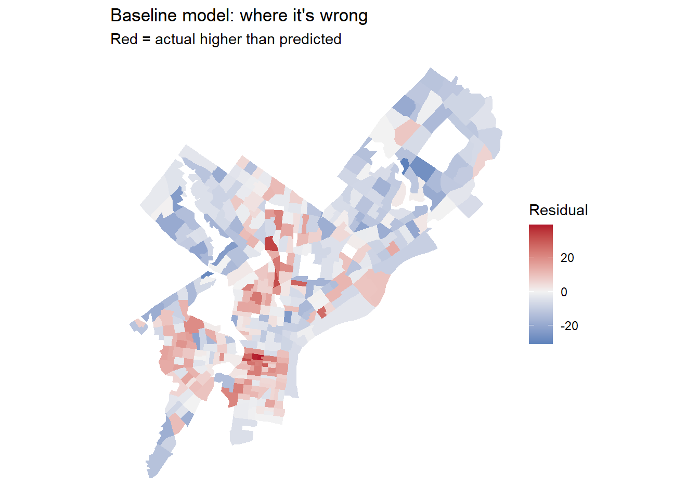
Answer: The red clusters (model under-predicting) sit in the lower-income, higher-density parts of North and West Philly, and the blue ones (over-predicting) are mostly in wealthier outlying tracts. What those red places probably have in common is a transportation context the ACS predictors just can’t see — how close they are to rapid transit or bike stations, how safe the streets feel, how walkable they are. That’s exactly why I pull crime, shooting, and Indego station data in Part 3.
carto_get <- function(sql) {
url <- paste0("https://phl.carto.com/api/v2/sql?format=GeoJSON&q=", URLencode(sql))
st_read(url, quiet = TRUE)
}burglary <- carto_get(
"SELECT the_geom, text_general_code, dispatch_date
FROM incidents_part1_part2
WHERE dispatch_date >= '2023-01-01' AND dispatch_date < '2024-01-01'
AND text_general_code = 'Burglary Residential'"
) %>%
st_transform(st_crs(tracts)) %>%
filter(!st_is_empty(.))
nrow(burglary)[1] 3681shootings <- carto_get(
"SELECT the_geom, date_
FROM shootings
WHERE date_ >= '2021-01-01' AND date_ < '2024-01-01'"
) %>%
st_transform(st_crs(tracts)) %>%
filter(!st_is_empty(.))
nrow(shootings)[1] 6280stations <- st_read("https://www.rideindego.com/stations/json/", quiet = TRUE) %>%
st_transform(st_crs(tracts))Answer: I picked these three layers because they get at the street-level reality my baseline model was missing. Crime and shootings tell me how safe it actually feels to walk or bike to transit — nobody is giving up the car if the block doesn’t feel safe. And the Indego stations tell me whether a real car-free alternative is even there. That’s the kind of thing the ACS variables, for all their detail, just can’t describe.
tracts <- tracts %>%
mutate(
n_burglary = lengths(st_intersects(., burglary)),
n_shoot = lengths(st_intersects(., shootings)),
area_sqmi = as.numeric(st_area(.)) / 27878400,
burglary_per_sqmi = n_burglary / area_sqmi,
shoot_per_sqmi = n_shoot / area_sqmi
)tract_pts <- st_point_on_surface(tracts)
nearest_idx <- st_nearest_feature(tract_pts, stations)
tracts <- tracts %>%
mutate(dist_station_mi = as.numeric(
st_distance(tract_pts, stations[nearest_idx, ], by_element = TRUE)) / 5280)city_hall <- st_sfc(st_point(c(-75.1636, 39.9526)), crs = 4326) %>%
st_transform(st_crs(tracts))
tracts <- tracts %>%
mutate(dist_ch_mi = as.numeric(st_distance(tract_pts, city_hall)) / 5280)# m2: crime density
f2 <- y ~ med_incE + poverty_rate + rent_pct + commute_min + burglary_per_sqmi + shoot_per_sqmi
model_log <- model_log %>%
add_row(model = "m2", added = "crime + shooting density",
cv_rmse = cv_rmse(f2, tracts),
notes = "density features")
# m3: distance to nearest bike station
f3 <- y ~ med_incE + poverty_rate + rent_pct + commute_min + dist_station_mi
model_log <- model_log %>%
add_row(model = "m3", added = "distance to nearest Indego station",
cv_rmse = cv_rmse(f3, tracts),
notes = "nearest-distance feature")
# m4: distance to City Hall
f4 <- y ~ med_incE + poverty_rate + rent_pct + commute_min + dist_ch_mi
model_log <- model_log %>%
add_row(model = "m4", added = "distance to City Hall",
cv_rmse = cv_rmse(f4, tracts),
notes = "single-place distance")
model_log# A tibble: 4 × 4
model added cv_rmse notes
<chr> <chr> <dbl> <chr>
1 m1 ACS baseline (4 predictors) 11.9 linear, no spatial features …
2 m2 crime + shooting density 11.4 density features
3 m3 distance to nearest Indego station 10.9 nearest-distance feature
4 m4 distance to City Hall 10.1 single-place distance Answer: I built five spatial features and logged three models. The one that helped most was distance to City Hall (m4), which cut CV RMSE from 11.9 to 10.1. Distance to the nearest Indego station (m3) also helped, down to 10.9 — I was sure it would, since it directly measures car-free access, and it did. The surprise was crime and shooting density (m2): it only nudged things to 11.4, basically nothing. I think that’s because crime density tracks income and density so closely that the ACS baseline had already captured most of what it had to offer.
ggplot(tracts, aes(x = burglary_per_sqmi)) + geom_histogram(bins = 30) + theme_minimal()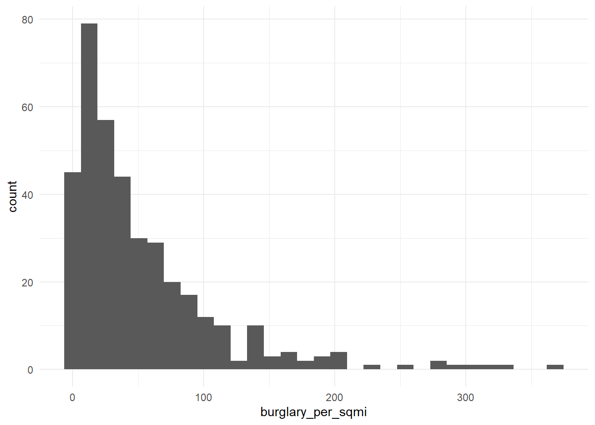
ggplot(tracts, aes(x = log1p(burglary_per_sqmi))) + geom_histogram(bins = 30) + theme_minimal()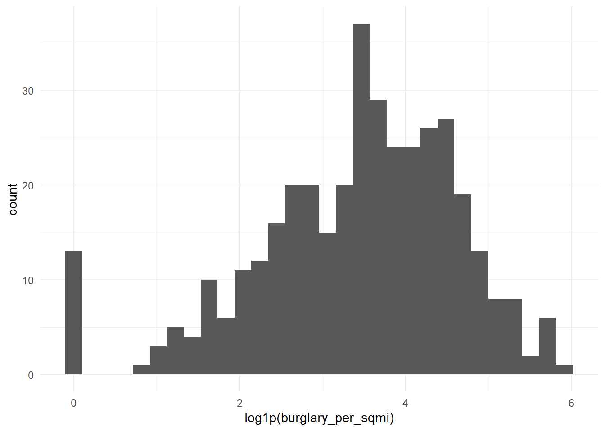
ggplot(tracts, aes(x = dist_ch_mi, y = y)) +
geom_point(alpha = 0.4) +
geom_smooth(method = "lm", formula = y ~ x + I(x^2), se = FALSE, color = "red") +
theme_minimal()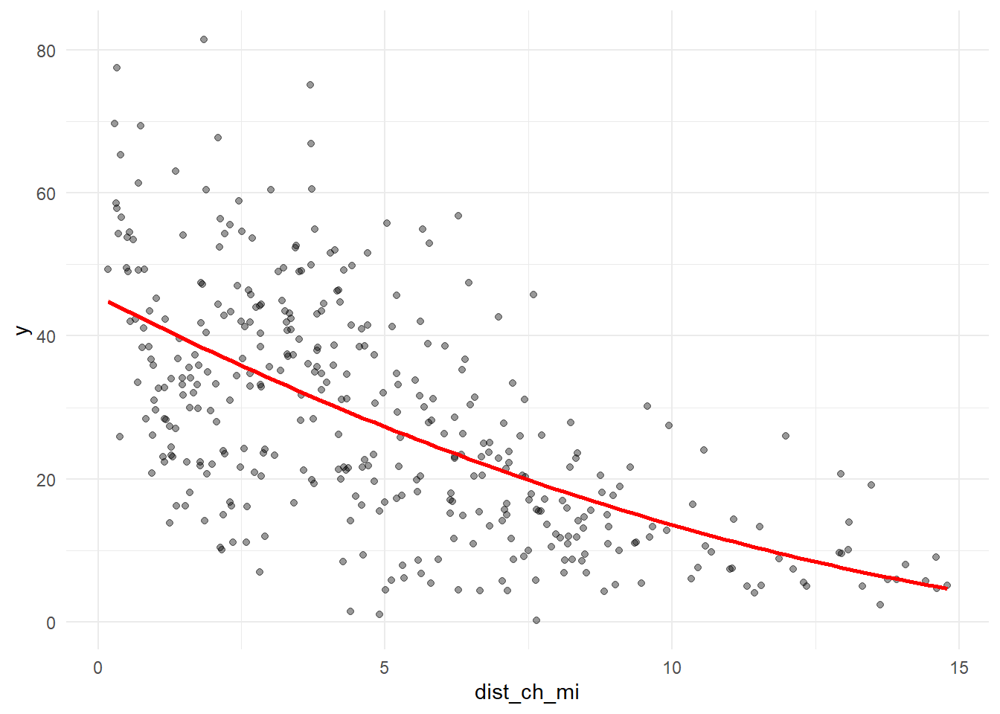
tracts <- tracts %>%
mutate(
ring = case_when(
dist_ch_mi < 2 ~ "Core",
dist_ch_mi < 5 ~ "Inner",
TRUE ~ "Outer"
),
ring = factor(ring, levels = c("Core", "Inner", "Outer"))
)
tracts %>% st_drop_geometry() %>% count(ring) ring n
1 Core 79
2 Inner 134
3 Outer 167# log1p of crime density
f_log <- y ~ med_incE + poverty_rate + rent_pct + commute_min + log1p(burglary_per_sqmi)
model_log <- model_log %>%
add_row(model = "m5", added = "log1p of crime density",
cv_rmse = cv_rmse(f_log, tracts),
notes = "log transform")
# squared distance to City Hall
f_sq <- y ~ med_incE + poverty_rate + rent_pct + commute_min + dist_ch_mi + I(dist_ch_mi^2)
model_log <- model_log %>%
add_row(model = "m6", added = "squared distance to City Hall",
cv_rmse = cv_rmse(f_sq, tracts),
notes = "curve in distance")
# categorical ring
f_cat <- y ~ med_incE + poverty_rate + rent_pct + commute_min + ring
model_log <- model_log %>%
add_row(model = "m7", added = "distance rings (Core/Inner/Outer)",
cv_rmse = cv_rmse(f_cat, tracts),
notes = "categorical")
model_log# A tibble: 7 × 4
model added cv_rmse notes
<chr> <chr> <dbl> <chr>
1 m1 ACS baseline (4 predictors) 11.9 linear, no spatial features …
2 m2 crime + shooting density 11.4 density features
3 m3 distance to nearest Indego station 10.9 nearest-distance feature
4 m4 distance to City Hall 10.1 single-place distance
5 m5 log1p of crime density 11.2 log transform
6 m6 squared distance to City Hall 9.59 curve in distance
7 m7 distance rings (Core/Inner/Outer) 10.2 categorical Answer: The transformation that helped most was the squared distance to City Hall (m6), which brought CV RMSE down to 9.59 — the best of the whole log — because the relationship between distance and car-lessness clearly bends and flattens rather than running straight. The log of crime density (m5, 11.2) barely beat the raw-density model, and the distance rings (m7, 10.2) sat in between. For my categorical variable, ringOuter is the coefficient for outer tracts against the reference level Core: it tells me how much higher or lower the predicted no-vehicle share is in an outer tract compared to a core one, holding everything else fixed.
f_final <- y ~ med_incE + poverty_rate + rent_pct + commute_min +
log1p(burglary_per_sqmi) + dist_station_mi + I(dist_ch_mi^2)
m_final <- lm(f_final, data = tracts)
summary(m_final)
Call:
lm(formula = f_final, data = tracts)
Residuals:
Min 1Q Median 3Q Max
-26.222 -7.153 -1.121 6.316 40.499
Coefficients:
Estimate Std. Error t value Pr(>|t|)
(Intercept) 1.936e+01 5.832e+00 3.320 0.000989 ***
med_incE -6.579e-05 2.567e-05 -2.563 0.010759 *
poverty_rate 1.851e-01 6.106e-02 3.032 0.002602 **
rent_pct 2.772e-01 3.093e-02 8.963 < 2e-16 ***
commute_min -1.941e-01 1.061e-01 -1.830 0.068101 .
log1p(burglary_per_sqmi) 1.798e+00 5.842e-01 3.078 0.002242 **
dist_station_mi 8.312e-01 8.801e-01 0.944 0.345599
I(dist_ch_mi^2) -1.503e-01 5.195e-02 -2.894 0.004031 **
---
Signif. codes: 0 '***' 0.001 '**' 0.01 '*' 0.05 '.' 0.1 ' ' 1
Residual standard error: 10.6 on 372 degrees of freedom
Multiple R-squared: 0.5835, Adjusted R-squared: 0.5757
F-statistic: 74.46 on 7 and 372 DF, p-value: < 2.2e-16model_log <- model_log %>%
add_row(model = "final", added = "combined best features",
cv_rmse = cv_rmse(f_final, tracts),
notes = "log crime density + station distance + squared city-hall distance")
model_log# A tibble: 8 × 4
model added cv_rmse notes
<chr> <chr> <dbl> <chr>
1 m1 ACS baseline (4 predictors) 11.9 linear, no spatial features …
2 m2 crime + shooting density 11.4 density features
3 m3 distance to nearest Indego station 10.9 nearest-distance feature
4 m4 distance to City Hall 10.1 single-place distance
5 m5 log1p of crime density 11.2 log transform
6 m6 squared distance to City Hall 9.59 curve in distance
7 m7 distance rings (Core/Inner/Outer) 10.2 categorical
8 final combined best features 10.7 log crime density + station …tracts <- tracts %>% mutate(resid_final = residuals(m_final))
ggplot(tracts) +
geom_sf(aes(fill = resid_final), color = NA) +
scale_fill_gradient2(low = "#2166ac", mid = "grey95", high = "#b2182b", midpoint = 0) +
theme_void() +
labs(title = "Final model: where it's wrong",
subtitle = "Red = actual higher than predicted",
fill = "Residual")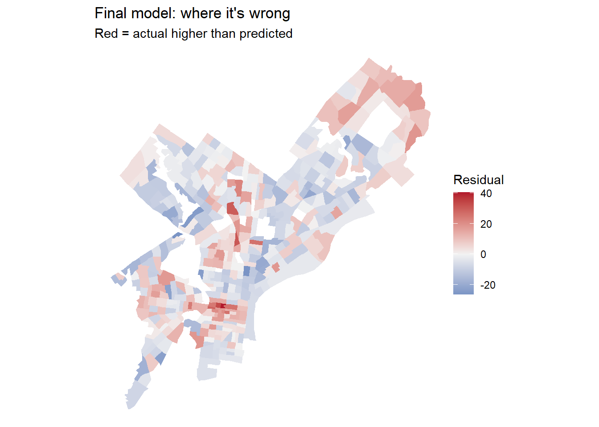
I put the two residual maps side by side. The clusters from Part 2C did shrink a bit — the crime and distance features soaked up part of the under-prediction — but the densest part of Center City and a few outlying tracts still stick out, mostly because those are small tracts with small counts, where the residuals bounce around a lot.
ggplot(tracts, aes(x = y_cv, y = abs(resid_final))) +
geom_point(alpha = 0.5) +
geom_smooth(se = FALSE) +
labs(x = "CV of your outcome estimate (%)", y = "Size of the miss") +
theme_minimal()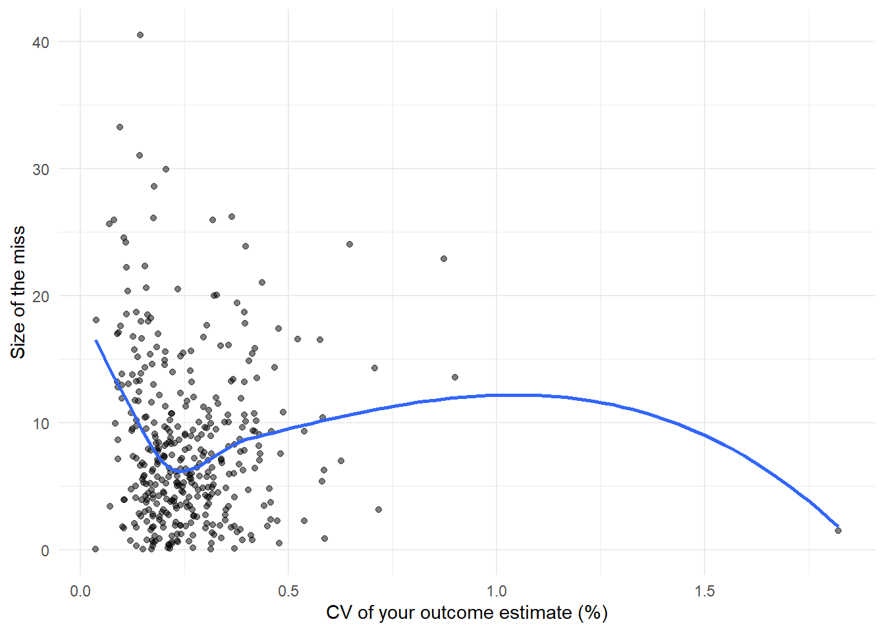
1. What helped, and what didn’t? The single most useful move was squaring the distance to City Hall (m6), which took CV RMSE from 10.1 down to 9.59 — distance and car-lessness don’t run in a straight line, and letting the model bend that relationship bought the most. The biggest disappointment was crime and shooting density (m2): I was sure street safety would matter, but it only moved CV RMSE from 11.9 to 11.4. Crime density is so tightly tied to income and density that the ACS baseline had already absorbed almost everything it could offer. The other notable thing is that my “final” model (10.7) didn’t actually beat the simpler squared-distance model (9.59) — piling on every helpful feature cost more than it gained, a useful reminder that more is not always better in CV RMSE terms.
2. Read one coefficient twice. Take I(dist_ch_mi^2). In its β̂ reading, the estimated coefficient is about -0.15, meaning the squared distance term pulls the curve downward as distance grows. In its ŷ reading, because the linear distance term is positive and this squared term is negative, predicted no-vehicle share rises with distance from Center City at first and then flattens or turns down — exactly the bend I saw in the scatterplot.
3. What’s still missing? On the final residual map, the places I still miss most are the very high-density core and a few outlying tracts with almost nobody in them. The next thing I’d want to measure is transit service intensity — how many bus routes run through a tract, or how frequent the service is — because whether a household gives up the car depends as much on how good the transit is as on whether transit exists. SEPTA’s route data, or a transit layer on OpenDataPhilly, is where I’d go for that.
4. How much of the remaining error might be noise? The last plot tells the story: the biggest misses sit in tracts where the outcome estimate itself has a high CV. That points to a good chunk of the leftover error being sampling uncertainty in the ACS number rather than a missing predictor — if the estimate itself is only known to within a wide band, there’s no model that can predict it more tightly than that.